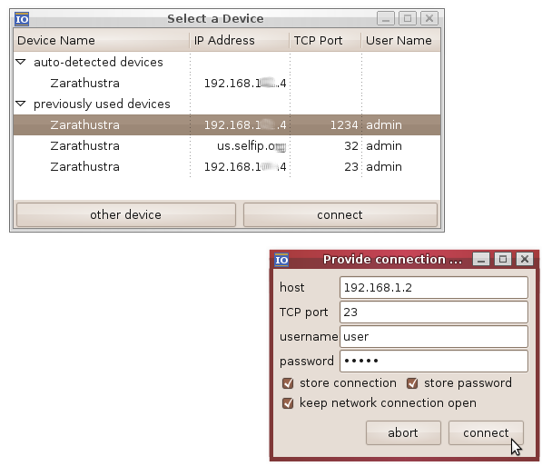
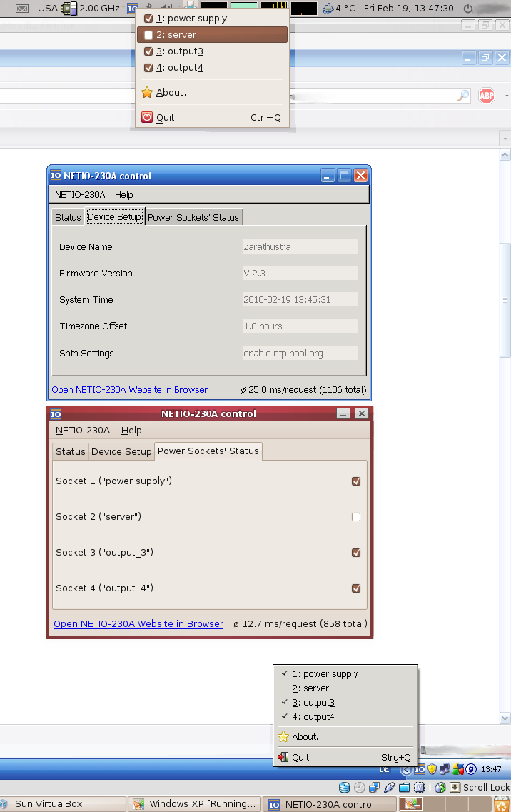

At start time of the GUI you will be displayed a list of auto-detected and recently used devices.
You can choose one of them or connect to a different one using the connection dialog:

Here you see the user interface of the GUI on a Linux and on a Windows system (Ubuntu Linux and Windows XP in a virtualized environment).
Both software instances are running at the same time (they can be connected to the same NETIO-230A when connecting in non-persistent mode):
